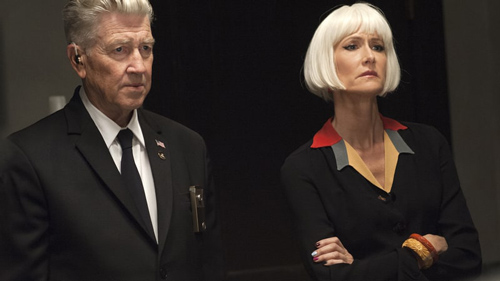

After last week's cosmic cataclysm of an episode, David Lynch's soap opera returns to Earth ... sort of.

Last time we visited, Twin Peaks unleashed the fires of the atom and the demons of the Black Lodge. For the follow-up, the show wants to talk about ... love. Why not? If director David Lynch and co-writer/co-creator Mark Frost have proven anything in this inventive, powerful relaunch of their supernatural soap opera, it's that they can do pretty much anything they damn well please. A show that spends minutes on end inside a nuclear explosion one week can depict lovable goofballs Deputy Andy and Lucy Brennan ordering living-room furniture the next.
But take a close a look at the Sheriff's Department's power couple, and you'll see that their debate over what color chair to get (she wants beige, he wants red) reveals hidden strengths of the show and its fundamentally warm heart. After a deadpan back and forth in which the couple stomp from one computer to another, the deputy finally relents, apologizing and hugging his wife before telling her she can go ahead and go with the beige. When he returns to his desk, however, she grins and picks the red instead – a surprise he'll no doubt cherish.
It's not just the decision itself that makes you swoon, though. It's the way the Lucy spins around in her office chair after clicking the "add to cart" button, as giddy in love as Amanda Seyfried's Becky was when her meathead of a man drove her around with the top down and the sun out several weeks back. Is it going to sear itself in the brains of millions the way, say, "This is the water and this is the well?" did? No. But it's the kind of attention to emotional detail that makes the show so endearing, despite its many terrors.
Another chair-based sequence, involving Deputy Bobby Briggs, his mother Betty and a secret message that Major Garland Briggs instructed her to deliver prior to his disappearance in a fire, has a similar effect. "He never lost faith in you," she tells her son, a.k.a. the former bad boy made good, after she retrieves it from its hiding place in a seat in their living room. This vote of confidence from beyond is a revelation just as important to Bobby as the clue his dad left behind – itself based on a happy memory of playing make-believe together when he was still a kid.
Love can hurt as well as bring happiness, however. This chapter provided evidence in the form of William Hastings, played by Matthew Lillard as a man on the verge of blubbering his way into incoherence. The disgraced small-town principal, adulterer and murder suspect turns out to have been an amateur UFO-logist and paranormal researcher, along with his mistress and alleged victim, town librarian Ruth Davenport. On a blog entitled "The Search for the Zone" – yes, it's real, though it's mostly a cleverly disguised ad for the soundtrack albums – the pair chronicled their search for alternate dimensions, ending with an encounter with the late (?) Major Briggs before her killing and his arrest.
The imprisoned man has many a story to tell about "the Zone" to Agent Tammy Preston, the FBI interrogator sent in to question him. "It was something like no one has ever seen before!" he declares of Briggs' ascension. "I've never seen anything like it! I've never, never read anything like it! You don't know, you weren't there!" Yet Hastings is just as impassioned about the tropical vacation he and Ruth had planned, which he refers to in a hysterical sing-song even more rapturous and sob-choked than his description of alternate dimensions. "We were gonna go to the Bahamas," he coos, momentarily smiling through the tears. "We were gonna scuba dive, and drink mixed drinks on the beach! And we were gonna soak up the sun and look at the beautiful sunsets!" In the end he's reduced to demanding the impossible, like a tantrum-throwing toddler: "I wanna go scuba diving!"
The camera does nothing but show Lillard's freakout and the uncomfortable reactions of the law enforcement officials watching him break down – a far cry from last week's explosive abstractions. But in its way, this displays Lynch and Frost's mastery of tone just as effectively. The conversation between Hastings and Preston careens back and forth from heartbreaking to terrifying, cringeworthy to intriguing with the speed of a splitting atom. You don't need any of the Woodsmen who've been hanging around the hoosegow to put in an appearance to feel the power of the writing here.
Even in the more overtly frightening sections of the story, the creep factor is subtle rather than spectacular. When the Dale doppelganger arrives at a safehouse secured by his lover Chantal (Jennifer Jason Leigh) and henchman Hutch (Tim Roth, making his Twin Peaks debut), the former occupants of the farm are simply shown lying dead in the background as the trio go about their morbid business. The evil Coop's subsequent actions are all done with the touch of a phone. He calls his underling Duncan Todd (Patrick Fischler, aka the Winkie's dream guy from Mulholland Drive) to follow up on the attempted assassination of the real Cooper. At first it appears he makes contact using a code phrase: "Around the dinner table the conversation is lively." But – and this may be the biggest shock of the night – we learn later that he actually sent the cryptic phrase to Diane, the chain-smoking, f-bomb-dropping former FBI employee to whom the good agent once addressed all his tape recordings. Is she a traitor to the cause who's playing her superiors Gordon and Albert for fools. Or is the sinister clone manipulating her? Major questions, raised by a simple text message.
And again, why not? On the show, the tiniest details are often a gateway to something bigger. The hole that the mentally disabled Johnny Horne leaves in the wall he crashes into head first; the bright red rash that Ella, a junkie played by musician Sky Ferreira, scratches obsessively; the dimly audible hum Ben Horne and his romantically interested assistant Beverly Paige continue to hear in his hotel; the squeak voice Ben's brother Jerry believes is coming from his own foot; the electrical socket Coop, a.k.a. Dougie Jones, stares at in the Las Vegas police station where he's been brought for questioning – all of them feel like gaps that could widen at any moment and swallow us. Whether haunting or heartwarming, this is a series can do a lot with a little.